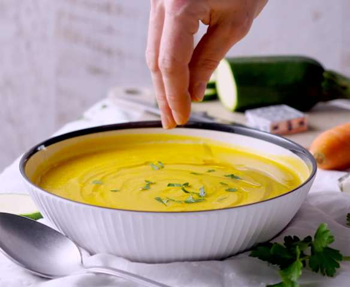

Recette de Soupe

Description
Ingrédients :
- 1 botte d'oignons nouveaux
- 3 pommes de terre
- 3 carottes
- 1 courgette
- 1 cube de bouillon (légumes ou volaille)
- 1 cuillère à soupe d'huile d'olive ou de beurre
- 1L à 1,5L d'Eau
- Sel et poivre et épices (Gingembre, Paprika...)
Etapes :
- Nettoyer et éplucher les légumes.
- Dans une casserole, faire revenir les oignons quelques minutes.
- Ajoutez les autres légumes durant 2 minutes puis ajouter l'eau et le cube de bouillon.
- Portez à ébullition puis réduisez pour laisser mijoter pendant 25 à 30 minutes.
- Ajoutez les épices.
- Hors du feu, mixez la soupe.